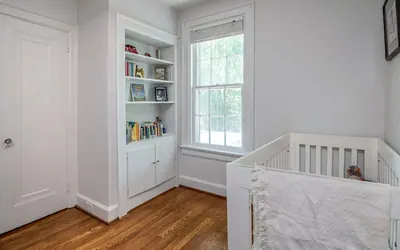
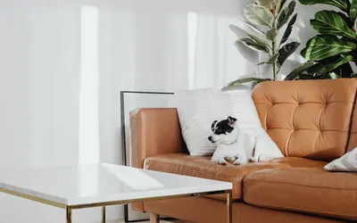
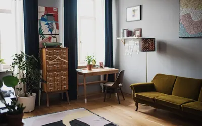
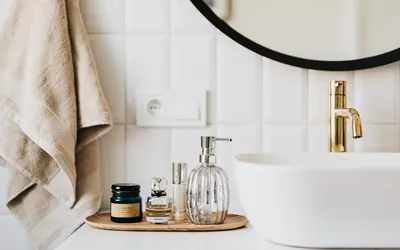
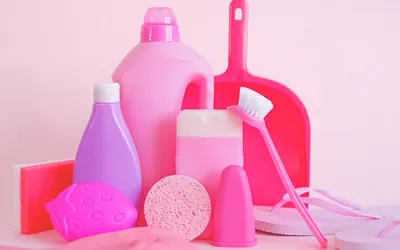

Featured Guide
AVOID Kitchen & Dining Safety
PFAS in Your Kitchen: What “Forever Chemicals” Really Mean for Your Health →
Browse guides by category
Kitchen & Dining Safety →
Science-backed guides to the materials that touch your food every day.

Nursery & Baby Gear →
Protecting the smallest members of your household from hidden material risks.

Pet Care Safety →
Keeping your cats and dogs safe from hidden material hazards.

Household Surfaces & Fabrics →
What’s hiding in your furniture, floors, and fabrics.

Personal Care & Chemicals →
The science behind what you put on your skin every day.

Cleaning & Maintenance →
Safer ways to keep your home clean without toxic tradeoffs.
Tech & Home Office →
The materials in your devices, cables, and workspace.
Outdoor & Garden →
What’s in your yard, garden, and outdoor living spaces.